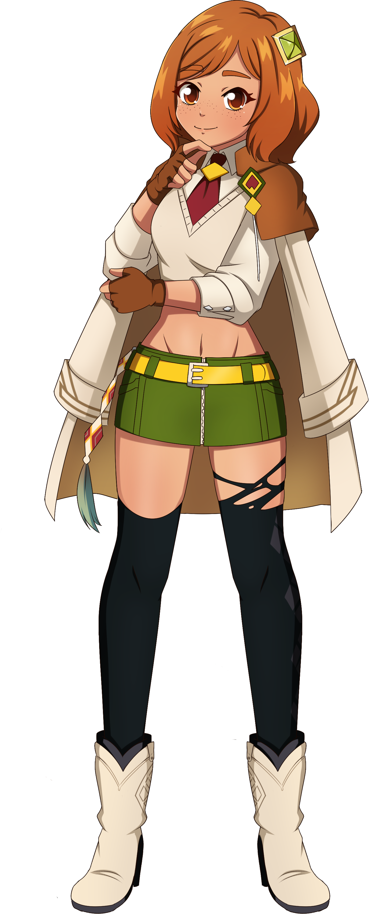
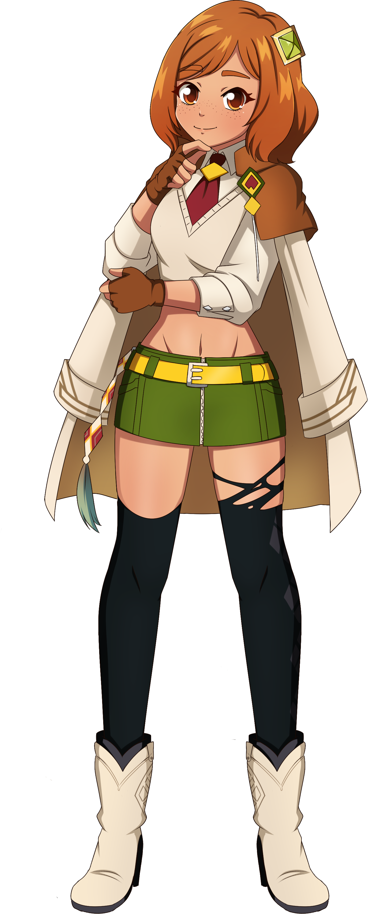

Windi Aicera

name: Windi Aicera
age: 19
date of birth: 3/4
hair color: dark brown
hair style: cute bob
skin tone: tan with light freckles
eye color: bright orange
height: 5 ft 4.37 in
ethnicity/race: Latina
citizenship: The Tribal Lands of Vagor
faction: Reason Theory
key attribute: genius
left-handed
body type: curvy
Character Bio/Personality:
After Tiala collapsed Day Industries and the GCSC, Wentea thought it in her best interest to drop her facade and assume her normal form.
She soon met Ami and after accidentally exchanging secrets, became friends.
With the dissolution of Praxis Verax Affinis and the secret formation of Destiny's Penance
by their sisters Tiala and Claris, Windi and Ami started Reason Theory simply to oppose their plans.